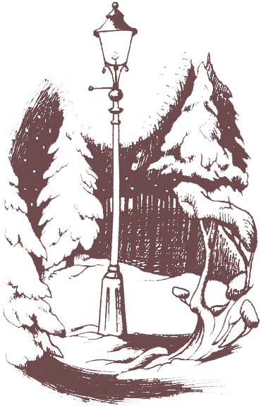

The Chronicles of Narnia
 The Chronicles of Narnia is a series of seven high fantasy novels by C. S. Lewis. It is considered a classic of children's literature and is the author's best-known work, having sold over 100 million copies in 47 languages.
Set in the fictional realm of Narnia, a fantasy world of magic, mythical beasts, and talking animals, the series narrates the adventures of various children who play central roles in the unfolding history of that world. They are called upon by the lion Aslan to protect Narnia from evil and restore the throne to its rightful line. The books span the entire history of Narnia, from its creation in The Magician's Nephew to its eventual destruction in The Last Battle.